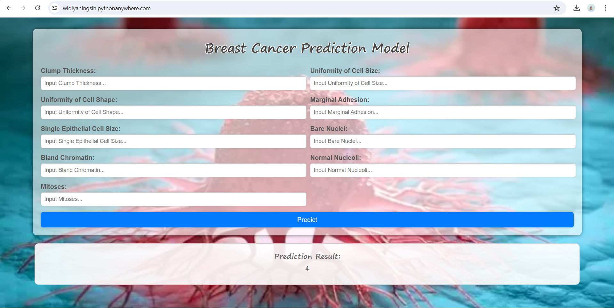
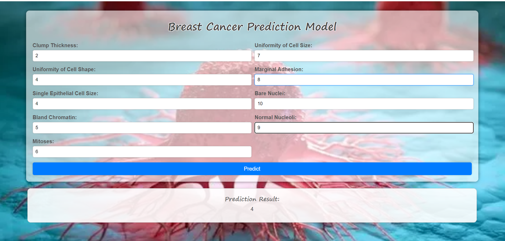

BREAST CANCER#
TUJUAN STUDI KASUS BREAST CANCER#
Memahami kanker payudara dan fitur-fiturnya memiliki tujuan penting, terutama dari sisi kesehatan. Berikut adalah beberapa alasan mengapa pemahaman ini sangat penting:
Deteksi Dini dan Diagnosis
Deteksi Dini:
Kanker payudara yang terdeteksi pada tahap awal memiliki peluang lebih besar untuk berhasil diobati.
Pemahaman tentang gejala awal dan faktor risiko dapat meningkatkan kesadaran masyarakat untuk menjalani pemeriksaan rutin dan skrining mammografi.
Diagnosis yang Akurat:
Fitur-fitur seperti ketebalan klump, ukuran dan bentuk sel, serta pola nuklir sel dapat membantu dokter dalam mendiagnosis kanker payudara dengan lebih akurat.
Teknik diagnostik yang lebih baik dapat mengurangi risiko misdiagnosis dan pengobatan yang tidak perlu.
Pengembangan Pengobatan yang Efektif
Perawatan Personalisasi:
Memahami fitur-fitur spesifik dari kanker payudara membantu dalam pengembangan perawatan yang disesuaikan dengan karakteristik individu dari tumor.
Perawatan yang lebih spesifik dapat meningkatkan efektivitas terapi dan mengurangi efek samping.
Kemajuan dalam Terapi:
Studi tentang fitur biologis kanker payudara dapat mengarah pada penemuan target terapi baru, seperti terapi hormon atau imunoterapi.
Penelitian tentang bagaimana sel kanker berkembang dan bertahan dapat menginformasikan pengembangan obat baru yang lebih efektif.
Peningkatan Prognosis dan Kualitas Hidup
Prognosis yang Lebih Baik:
Analisis fitur tumor dapat membantu memprediksi bagaimana kanker akan berkembang dan seberapa agresifnya.
Prognosis yang lebih baik memungkinkan dokter dan pasien membuat keputusan yang lebih tepat mengenai pengobatan dan perawatan jangka panjang.
Kualitas Hidup:
Pemahaman yang mendalam tentang kanker payudara dapat membantu mengembangkan strategi yang mengurangi dampak negatif dari pengobatan terhadap kualitas hidup pasien.
Dukungan psikososial dan intervensi lainnya dapat dirancang lebih efektif berdasarkan karakteristik dan kebutuhan pasien.
Pencegahan
Identifikasi Faktor Risiko:
Penelitian fitur dan pola kanker payudara dapat mengidentifikasi faktor risiko yang signifikan, seperti genetik, lingkungan, dan gaya hidup.
Informasi ini dapat digunakan untuk mengembangkan program pencegahan yang efektif, seperti kampanye kesadaran dan pendidikan kesehatan masyarakat.
Kesimpulan
Memahami kanker payudara dan fitur-fiturnya adalah kunci untuk meningkatkan deteksi dini, diagnosis, pengobatan, dan pencegahan. Dalam sisi kesehatan, ini berarti peningkatan tingkat kesembuhan, pengurangan angka kematian, dan peningkatan kualitas hidup bagi mereka yang terkena dampak. Dengan kemajuan teknologi dan penelitian, pengetahuan ini terus berkembang, memberikan harapan baru dan solusi yang lebih baik untuk pasien kanker payudara di seluruh dunia.
PENGERTIAN#
Kanker payudara adalah jenis kanker yang berkembang dari sel-sel payudara. Ini adalah salah satu jenis kanker yang paling umum terjadi pada wanita, meskipun pria juga dapat mengalaminya.
Kanker payudara terjadi ketika sel-sel di payudara mulai tumbuh tidak terkendali. Sel-sel ini biasanya membentuk tumor yang dapat dirasakan sebagai benjolan atau terlihat pada pemeriksaan sinar-X. Tumor bersifat ganas jika sel-selnya dapat menyebar ke bagian tubuh lain.
Kanker payudara dapat diobati dengan efektif jika terdeteksi lebih awal. Oleh karena itu, penting untuk melakukan pemeriksaan rutin dan menyadari perubahan yang terjadi pada payudara.
Faktor Risiko Kanker Payudara:
Jenis Kelamin: Wanita memiliki risiko lebih tinggi daripada pria.
Usia: Risiko meningkat seiring bertambahnya usia.
Riwayat Keluarga: Memiliki anggota keluarga dengan kanker payudara meningkatkan risiko.
Genetik: Mutasi gen tertentu, seperti BRCA1 dan BRCA2, meningkatkan risiko.
Riwayat Pribadi Kanker Payudara: Pernah menderita kanker payudara meningkatkan risiko kambuh.
Hormon: Terapi hormon setelah menopause dan penggunaan kontrasepsi hormonal dapat meningkatkan risiko.
Gaya Hidup: Faktor seperti obesitas, alkohol, dan kurangnya aktivitas fisik dapat berkontribusi.
Gejala Kanker Payudara:
Benjolan atau massa di payudara
Perubahan ukuran atau bentuk payudara
Perubahan pada kulit payudara, seperti kerutan atau lesung pipit
Keluar cairan dari puting yang bukan ASI
Kemerahan atau perubahan kulit di sekitar puting
Diagnosa Kanker Payudara:
Mamografi: Pemeriksaan sinar-X pada payudara.
Ultrasonografi: Menggunakan gelombang suara untuk membuat gambar jaringan payudara.
Biopsi: Mengambil sampel jaringan payudara untuk diperiksa lebih lanjut di laboratorium.
MRI: Menggunakan medan magnet dan gelombang radio untuk membuat gambar detail dari payudara.
Pengobatan Kanker Payudara:
Operasi: Mengangkat tumor atau payudara (mastektomi).
Radioterapi: Menggunakan sinar energi tinggi untuk membunuh sel kanker.
Kemoterapi: Menggunakan obat-obatan untuk membunuh sel kanker.
Terapi Hormon: Menghambat hormon yang dapat mendorong pertumbuhan kanker.
Terapi Target: Menggunakan obat-obatan yang menargetkan protein tertentu pada sel kanker.
FITUR-FITUR YANG PERLU DIPAHAMI#
Untuk Mengetahui apakah benjolan pada payudara tersebut termasuk tumor jinak atau ganas kita perlu memahami serta mengetahui beberapa fitur, antara lain:
Sample_code_number
Peran: Pengenal unik (ID)
Deskripsi: Ini adalah nomor identifikasi unik untuk setiap sampel yang diuji. Fitur ini tidak memberikan informasi tentang kanker, hanya untuk identifikasi sampel saja.
Clump_thickness (Ketebalan Gumpalan)
Deskripsi: Mengukur seberapa tebal kelompok sel dalam sampel. Gumpalan yang lebih tebal bisa menjadi tanda adanya tumor atau kanker. Ukuran sel diisi dari 1-10.
Uniformity_of_cell_size (Keseragaman Ukuran Sel)
Deskripsi: Mengukur seberapa seragam ukuran sel-sel dalam sampel. Jika sel-sel sangat bervariasi dalam ukuran, ini bisa menjadi indikasi adanya kanker, karena sel kanker cenderung bervariasi dalam ukuran. Ukuran sel diisi dari 1-10.
Uniformity_of_cell_shape (Keseragaman Bentuk Sel)
Deskripsi: Mengukur seberapa seragam bentuk sel-sel dalam sampel. Sel kanker sering memiliki bentuk yang tidak seragam, jadi variasi besar dalam bentuk sel bisa menunjukkan adanya kanker. Ukuran sel diisi dari 1-10.
Marginal_adhesion (Adhesi Marginal)
Deskripsi: Mengukur kemampuan sel-sel untuk menempel satu sama lain di tepi. Sel kanker biasanya kurang menempel satu sama lain dibandingkan dengan sel normal. Ukuran sel diisi dari 1-10.
Single_epithelial_cell_size (Ukuran Sel Epitel Tunggal)
Deskripsi: Mengukur ukuran sel-sel epitel tunggal. Sel kanker cenderung lebih besar dari sel normal, jadi ukuran yang lebih besar bisa menjadi tanda kanker. Ukuran sel diisi dari 1-10.
Bare_nuclei (Nuklei Telanjang)
Deskripsi: Mengukur jumlah inti sel yang tidak dikelilingi oleh sitoplasma. Kehadiran banyak inti sel yang telanjang bisa menunjukkan adanya kanker, karena sel kanker sering memiliki inti yang lebih terlihat. Ukuran sel diisi dari 1-10.
Bland_chromatin (Kromatin Biasa)
Deskripsi: Mengukur tampilan kromatin di dalam inti sel. Kromatin yang normal tampak halus dan seragam, sedangkan sel kanker sering memiliki kromatin yang kasar atau tidak teratur. Ukuran sel diisi dari 1-10.
Normal_nucleoli (Nukleolus Normal)
Deskripsi: Mengukur tampilan nukleolus di dalam inti sel. Nukleolus yang membesar atau memiliki tampilan tidak normal bisa menunjukkan adanya kanker, karena sel kanker cenderung memiliki nukleolus yang lebih besar dan lebih menonjol. Ukuran sel diisi dari 1-10.
Mitoses (Mitosis)
Deskripsi: Mengukur jumlah sel yang sedang membelah. Tingginya tingkat pembelahan sel bisa menjadi tanda adanya kanker, karena sel kanker sering membelah lebih cepat daripada sel normal. Ukuran sel diisi dari 1-10.
Setiap fitur ini membantu dalam menilai apakah sampel sel menunjukkan karakteristik kanker atau tidak. Kombinasi dari semua fitur ini digunakan untuk membuat diagnosis yang lebih akurat. Untuk penilaian ukuran 1-10 didasarkan oleh pengamatan para ahlinya.
Selanjutnya maka akan dilakukan klasifikasi atau class penentuan bahwa benjolannya termasuk tumor jinak atau ganas.
Class nya berlabel 2 (untuk jinak) 4 (untuk ganas)
DATA UNDERSTANDING#
COLLECTING DATA(MENGUMPULKAN DATA)#
Dataset ini merupakan dataset mengenai Breast Cancer Wisconsin (Original). Yaitu kanker payudara yang terjadi di daerah wisconsin. Berikut adalah link datasetnya : https://archive.ics.uci.edu/dataset/15/breast+cancer+wisconsin+original.hh
Data ini didapatkan dari ucidataset, dan data yang akan kami pelajari adalah breast cancer (kanker payudara). Berikut adalah langkah penarikan data. Mengambil langsung dari database ucidataset.

pip install ucimlrepo
Requirement already satisfied: ucimlrepo in c:\users\azgar\appdata\local\programs\python\python310\lib\site-packages (0.0.7)Note: you may need to restart the kernel to use updated packages.
Requirement already satisfied: pandas>=1.0.0 in c:\users\azgar\appdata\local\programs\python\python310\lib\site-packages (from ucimlrepo) (2.2.2)
Requirement already satisfied: certifi>=2020.12.5 in c:\users\azgar\appdata\local\programs\python\python310\lib\site-packages (from ucimlrepo) (2022.12.7)
Requirement already satisfied: numpy>=1.22.4 in c:\users\azgar\appdata\local\programs\python\python310\lib\site-packages (from pandas>=1.0.0->ucimlrepo) (1.24.3)
Requirement already satisfied: tzdata>=2022.7 in c:\users\azgar\appdata\local\programs\python\python310\lib\site-packages (from pandas>=1.0.0->ucimlrepo) (2024.1)
Requirement already satisfied: pytz>=2020.1 in c:\users\azgar\appdata\local\programs\python\python310\lib\site-packages (from pandas>=1.0.0->ucimlrepo) (2022.6)
Requirement already satisfied: python-dateutil>=2.8.2 in c:\users\azgar\appdata\local\programs\python\python310\lib\site-packages (from pandas>=1.0.0->ucimlrepo) (2.8.2)
Requirement already satisfied: six>=1.5 in c:\users\azgar\appdata\local\programs\python\python310\lib\site-packages (from python-dateutil>=2.8.2->pandas>=1.0.0->ucimlrepo) (1.16.0)
[notice] A new release of pip available: 22.2.2 -> 24.1
[notice] To update, run: C:\Users\azgar\AppData\Local\Programs\Python\Python310\python.exe -m pip install --upgrade pip
Langkah ini untuk melakukan penarikan dataset dan disimpan dalam file berbentuk csv yang saya beri nama breast_cancer.csv
import pandas as pd
from ucimlrepo import fetch_ucirepo
# fetch dataset
breast_cancer_wisconsin_original = fetch_ucirepo(id=15)
# data (as pandas dataframes)
X = breast_cancer_wisconsin_original.data.features
y = breast_cancer_wisconsin_original.data.targets
df_breast = pd.concat([X, y], axis=1)
# Simpan DataFrame ke dalam file CSV
df_breast.to_csv('breast_cancer.csv', index=False)
print("Data telah disimpan ke file 'breast_cancer.csv'")
Data telah disimpan ke file 'breast_cancer.csv'
Ini untuk menampilkan semua kolom atau fitur yang ada
pd.set_option('display.max_columns', None) # Menampilkan semua kolom
print(df_breast)
Clump_thickness Uniformity_of_cell_size Uniformity_of_cell_shape \
0 5 1 1
1 5 4 4
2 3 1 1
3 6 8 8
4 4 1 1
.. ... ... ...
694 3 1 1
695 2 1 1
696 5 10 10
697 4 8 6
698 4 8 8
Marginal_adhesion Single_epithelial_cell_size Bare_nuclei \
0 1 2 1.0
1 5 7 10.0
2 1 2 2.0
3 1 3 4.0
4 3 2 1.0
.. ... ... ...
694 1 3 2.0
695 1 2 1.0
696 3 7 3.0
697 4 3 4.0
698 5 4 5.0
Bland_chromatin Normal_nucleoli Mitoses Class
0 3 1 1 2
1 3 2 1 2
2 3 1 1 2
3 3 7 1 2
4 3 1 1 2
.. ... ... ... ...
694 1 1 1 2
695 1 1 1 2
696 8 10 2 4
697 10 6 1 4
698 10 4 1 4
[699 rows x 10 columns]
DATAFRAME BREAST CANCER#
Bagian ini untuk menampilkan dataset dalam bentuk dataframe
display(df_breast)
| Clump_thickness | Uniformity_of_cell_size | Uniformity_of_cell_shape | Marginal_adhesion | Single_epithelial_cell_size | Bare_nuclei | Bland_chromatin | Normal_nucleoli | Mitoses | Class | |
|---|---|---|---|---|---|---|---|---|---|---|
| 0 | 5 | 1 | 1 | 1 | 2 | 1.0 | 3 | 1 | 1 | 2 |
| 1 | 5 | 4 | 4 | 5 | 7 | 10.0 | 3 | 2 | 1 | 2 |
| 2 | 3 | 1 | 1 | 1 | 2 | 2.0 | 3 | 1 | 1 | 2 |
| 3 | 6 | 8 | 8 | 1 | 3 | 4.0 | 3 | 7 | 1 | 2 |
| 4 | 4 | 1 | 1 | 3 | 2 | 1.0 | 3 | 1 | 1 | 2 |
| ... | ... | ... | ... | ... | ... | ... | ... | ... | ... | ... |
| 694 | 3 | 1 | 1 | 1 | 3 | 2.0 | 1 | 1 | 1 | 2 |
| 695 | 2 | 1 | 1 | 1 | 2 | 1.0 | 1 | 1 | 1 | 2 |
| 696 | 5 | 10 | 10 | 3 | 7 | 3.0 | 8 | 10 | 2 | 4 |
| 697 | 4 | 8 | 6 | 4 | 3 | 4.0 | 10 | 6 | 1 | 4 |
| 698 | 4 | 8 | 8 | 5 | 4 | 5.0 | 10 | 4 | 1 | 4 |
699 rows × 10 columns
Jumlah Data#
Jumlah data breast cancer berjumlah 699 data
len(df_breast)
699
Jumlah data pada masing-masing kategori class.
Pada kategori 2 jumlah datanya 458
Pada kategori 4 jumlah datanya 241
# Import library yang diperlukan
import pandas as pd
# Memuat dataset dari file CSV
df_breast = pd.read_csv('breast_cancer.csv')
# Menampilkan jumlah total data
total_data = len(df_breast)
print(f"Jumlah total data: {total_data}")
# Menampilkan jumlah data pada masing-masing class
class_counts = df_breast['Class'].value_counts()
print("Jumlah data pada masing-masing class:")
print(class_counts)
# Menampilkan jumlah data pada class dengan kategori 2
class_2_count = class_counts.get(2, 0) # .get(2, 0) untuk menangani jika tidak ada class 2
print(f"Jumlah data pada class kategori 2: {class_2_count}")
# Menampilkan jumlah data pada class dengan kategori 4
class_4_count = class_counts.get(4, 0) # .get(4, 0) untuk menangani jika tidak ada class 4
print(f"Jumlah data pada class kategori 4: {class_4_count}")
Jumlah total data: 699
Jumlah data pada masing-masing class:
Class
2 458
4 241
Name: count, dtype: int64
Jumlah data pada class kategori 2: 458
Jumlah data pada class kategori 4: 241
TIPE DATA PADA SETIAP FITUR#
Dalam data mining, jika ada dua kategori dalam sebuah kelas, tipe data ini disebut sebagai data kategorikal biner atau data biner. Berikut adalah penjelasan lebih lanjut:
Tipe Data Kategorikal Biner
Definisi:
Data kategorikal biner adalah data yang memiliki dua kemungkinan kategori atau kelas. Contohnya, jika kelas memiliki dua kategori seperti “malignant” (ganas) dan “benign” (jinak) dalam konteks kanker payudara, maka ini adalah data biner.
Contoh Lain:
Ya atau Tidak
Pria atau Wanita
Sukses atau Gagal
0 atau 1 (dalam representasi biner)
Tipe Data dalam Data Mining
Kategorikal (Nominal):
Data yang dikategorikan berdasarkan nama atau label tanpa urutan tertentu. Misalnya, warna (merah, hijau, biru), jenis kelamin (pria, wanita).
Dalam kasus dua kategori, ini dikenal sebagai data biner.
Ordinal:
Data yang memiliki kategori dengan urutan atau ranking. Misalnya, skala penilaian (rendah, sedang, tinggi).
Interval:
Data numerik di mana jarak antara dua nilai adalah bermakna, tetapi tidak ada titik nol absolut. Contohnya, suhu dalam Celcius atau Fahrenheit.
Rasio:
Data numerik dengan titik nol absolut, yang memungkinkan perbandingan rasio. Contohnya, tinggi badan, berat badan.
Penggunaan Data Biner dalam Data Mining
Klasifikasi: Model klasifikasi seperti regresi logistik, pohon keputusan, dan Support Vector Machines (SVM) sering digunakan untuk memprediksi kelas biner.
Clustering: Algoritma clustering seperti K-Means dapat digunakan untuk mengelompokkan data ke dalam dua kategori.
Association Rule Mining: Mencari hubungan atau pola antara variabel dalam dataset biner.
Contoh dalam Konteks Kanker Payudara Dalam dataset kanker payudara, kategori kelas bisa berupa:
Malignant (Ganas): Diwakili oleh satu nilai, misalnya 1.
Benign (Jinak): Diwakili oleh nilai lainnya, misalnya 0.
Model pembelajaran mesin akan dilatih untuk memprediksi apakah sampel baru termasuk dalam kategori “malignant” atau “benign” berdasarkan fitur-fitur yang ada.
Representasi Data Biner
Label: Kategori sering direpresentasikan sebagai label teks atau angka. Misalnya, “malignant” dan “benign” atau 1 dan 0.
Encoding: Dalam pembelajaran mesin, kategori biner sering di-encode sebagai 0 dan 1 untuk memudahkan proses komputasi.
Kesimpulan Jika ada dua kategori kelas dalam sebuah dataset, tipe data ini disebut sebagai data kategorikal biner atau data biner. Ini adalah bentuk khusus dari data kategorikal di mana hanya ada dua kemungkinan nilai. Data ini sering digunakan dalam berbagai teknik analisis dan model pembelajaran mesin untuk klasifikasi biner.
Semua fitur bertipe data numerik, dan untuk class bertipe data biner (kategorikal).
df_breast.dtypes
Clump_thickness int64
Uniformity_of_cell_size int64
Uniformity_of_cell_shape int64
Marginal_adhesion int64
Single_epithelial_cell_size int64
Bare_nuclei float64
Bland_chromatin int64
Normal_nucleoli int64
Mitoses int64
Class int64
dtype: object
EKSPLORASI DATA#
IDENTIFIKASI KUALITAS DATA#
IDENTIFIKASI MISSING VALUE#
Missing value adalah data yang tidak tersedia atau hilang dalam sebuah dataset. Ini dapat terjadi karena berbagai alasan seperti kesalahan manusia, kegagalan teknis, atau data yang memang tidak ada.
import pandas as pd
# Memeriksa apakah ada nilai yang hilang dalam setiap kolom
missing_values = df_breast.isnull().sum()
# Menampilkan jumlah nilai yang hilang untuk setiap kolom
print("Jumlah nilai yang hilang untuk setiap kolom:")
print(missing_values)
# Mengecek apakah ada nilai yang hilang
if missing_values.sum() == 0:
print("Tidak ada missing value.")
else:
print("Terdapat missing value dalam dataset.")
Jumlah nilai yang hilang untuk setiap kolom:
Clump_thickness 0
Uniformity_of_cell_size 0
Uniformity_of_cell_shape 0
Marginal_adhesion 0
Single_epithelial_cell_size 0
Bare_nuclei 16
Bland_chromatin 0
Normal_nucleoli 0
Mitoses 0
Class 0
dtype: int64
Terdapat missing value dalam dataset.
import pandas as pd
import numpy as np
# Misalkan df_breast adalah DataFrame Anda
# Sebagai contoh, mari kita buat DataFrame dummy dengan kolom 'value'
np.random.seed(0)
data = np.random.randint(1, 11, size=(100, 1)) # Data acak antara 1-10
df_breast = pd.DataFrame(data, columns=['value'])
# Fungsi untuk mendeteksi outlier menggunakan metode IQR
def detect_outliers_iqr(df, column):
Q1 = df[column].quantile(0.25)
Q3 = df[column].quantile(0.75)
IQR = Q3 - Q1
lower_bound = Q1 - 1.5 * IQR
upper_bound = Q3 + 1.5 * IQR
outliers = df[(df[column] < lower_bound) | (df[column] > upper_bound)]
return outliers
# Mendeteksi outlier pada kolom 'value'
outliers = detect_outliers_iqr(df_breast, 'value')
# Menampilkan hasil
print("Dataframe Breast:")
print(df_breast.head())
print("\nOutliers:")
print(outliers)
Dataframe Breast:
value
0 6
1 1
2 4
3 4
4 8
Outliers:
Empty DataFrame
Columns: [value]
Index: []
Tidak ada outlier pada dataset diatas
PREPROCESSING DATA#
Dari eksplorasi data diatas, telah ditemukan adanya missing value pada fitur bare_nuclei. Maka akan kita lakukan imputasi atau pengisian missing value menggunakan nilai rata-rata.
import pandas as pd
from ucimlrepo import fetch_ucirepo
# Fetch dataset
breast_cancer_wisconsin_original = fetch_ucirepo(id=15)
# Data (as pandas dataframes)
X = breast_cancer_wisconsin_original.data.features
y = breast_cancer_wisconsin_original.data.targets
# Gabungkan features dan targets menjadi satu data frame
df_breast = pd.concat([X, y], axis=1)
df_breast = df_breast.apply(lambda x: x.fillna(x.mean()), axis=0)
# Menampilkan informasi tentang data frame setelah mengisi missing values
print("Data frame setelah mengisi missing values:")
print(df_breast.info())
# Menampilkan beberapa baris pertama untuk memastikan pengisian nilai berhasil
print(df_breast.head())
# Simpan DataFrame ke dalam file CSV
df_breast.to_csv('breast_cancer_2.csv', index=False)
Data frame setelah mengisi missing values:
<class 'pandas.core.frame.DataFrame'>
RangeIndex: 699 entries, 0 to 698
Data columns (total 10 columns):
# Column Non-Null Count Dtype
--- ------ -------------- -----
0 Clump_thickness 699 non-null int64
1 Uniformity_of_cell_size 699 non-null int64
2 Uniformity_of_cell_shape 699 non-null int64
3 Marginal_adhesion 699 non-null int64
4 Single_epithelial_cell_size 699 non-null int64
5 Bare_nuclei 699 non-null float64
6 Bland_chromatin 699 non-null int64
7 Normal_nucleoli 699 non-null int64
8 Mitoses 699 non-null int64
9 Class 699 non-null int64
dtypes: float64(1), int64(9)
memory usage: 54.7 KB
None
Clump_thickness Uniformity_of_cell_size Uniformity_of_cell_shape \
0 5 1 1
1 5 4 4
2 3 1 1
3 6 8 8
4 4 1 1
Marginal_adhesion Single_epithelial_cell_size Bare_nuclei \
0 1 2 1.0
1 5 7 10.0
2 1 2 2.0
3 1 3 4.0
4 3 2 1.0
Bland_chromatin Normal_nucleoli Mitoses Class
0 3 1 1 2
1 3 2 1 2
2 3 1 1 2
3 3 7 1 2
4 3 1 1 2
Setelah itu ditampilkan lagi data framenya, maka sudah dapat kita lihat bahwa tidak ada lagi missing value.
display(df_breast)
| Clump_thickness | Uniformity_of_cell_size | Uniformity_of_cell_shape | Marginal_adhesion | Single_epithelial_cell_size | Bare_nuclei | Bland_chromatin | Normal_nucleoli | Mitoses | Class | |
|---|---|---|---|---|---|---|---|---|---|---|
| 0 | 5 | 1 | 1 | 1 | 2 | 1.0 | 3 | 1 | 1 | 2 |
| 1 | 5 | 4 | 4 | 5 | 7 | 10.0 | 3 | 2 | 1 | 2 |
| 2 | 3 | 1 | 1 | 1 | 2 | 2.0 | 3 | 1 | 1 | 2 |
| 3 | 6 | 8 | 8 | 1 | 3 | 4.0 | 3 | 7 | 1 | 2 |
| 4 | 4 | 1 | 1 | 3 | 2 | 1.0 | 3 | 1 | 1 | 2 |
| ... | ... | ... | ... | ... | ... | ... | ... | ... | ... | ... |
| 694 | 3 | 1 | 1 | 1 | 3 | 2.0 | 1 | 1 | 1 | 2 |
| 695 | 2 | 1 | 1 | 1 | 2 | 1.0 | 1 | 1 | 1 | 2 |
| 696 | 5 | 10 | 10 | 3 | 7 | 3.0 | 8 | 10 | 2 | 4 |
| 697 | 4 | 8 | 6 | 4 | 3 | 4.0 | 10 | 6 | 1 | 4 |
| 698 | 4 | 8 | 8 | 5 | 4 | 5.0 | 10 | 4 | 1 | 4 |
699 rows × 10 columns
MODELLING DATA#
Setelah preprocessing atau penyiapan data selesai dilakukan. Maka pada langkah ini, kita akan mencari nilai akurasi pada setiap model yang akan kita gunakan.
KNN#
K-Nearest Neighbors (KNN) adalah algoritma pembelajaran mesin yang digunakan untuk klasifikasi dan regresi. Algoritma ini bekerja dengan cara berikut:
Penentuan K: Pilih jumlah tetangga terdekat (K).
Menghitung Jarak: Hitung jarak antara data baru dan semua data di set pelatihan menggunakan metrik seperti jarak Euclidean.
dentifikasi Tetangga: Pilih K tetangga terdekat berdasarkan jarak yang telah dihitung.
Prediksi:
Klasifikasi: Data baru diberi label berdasarkan mayoritas kelas dari K tetangga terdekat.
Regresi: Prediksi nilai berdasarkan rata-rata dari K tetangga terdekat.
KNN mudah diimplementasikan, namun bisa menjadi lambat dengan dataset besar karena perlu menghitung jarak ke semua data pelatihan.
import pandas as pd
from sklearn.model_selection import train_test_split
from sklearn.preprocessing import StandardScaler
from sklearn.neighbors import KNeighborsClassifier
from sklearn.metrics import accuracy_score
# Asumsikan df_breast sudah terisi missing values menggunakan rata-rata
df_breast = pd.read_csv('breast_cancer_2.csv')
# Memisahkan features dan target
X = df_breast.drop(columns='Class') # Ganti 'Class' dengan nama kolom target jika berbeda
y = df_breast['Class']
# Membagi data menjadi set pelatihan dan pengujian
X_train, X_test, y_train, y_test = train_test_split(X, y, test_size=0.2, random_state=42)
# Standardisasi fitur
scaler = StandardScaler()
X_train = scaler.fit_transform(X_train)
X_test = scaler.transform(X_test)
# Melatih model KNN
knn = KNeighborsClassifier(n_neighbors=5) # Anda bisa mengubah jumlah tetangga jika diperlukan
knn.fit(X_train, y_train)
# Memprediksi data uji
y_pred = knn.predict(X_test)
# Mengevaluasi akurasi model
accuracy = accuracy_score(y_test, y_pred)
print(f"Akurasi model KNN: {accuracy:.2f}")
Akurasi model KNN: 0.97
NAIVE BAYES#
Naive Bayes adalah kelompok algoritma klasifikasi sederhana yang berdasarkan pada penerapan teorema Bayes dengan asumsi kemandirian antar fitur. Berikut penjelasannya:
Asumsi Sederhana: Algoritma ini mengasumsikan bahwa fitur-fitur dalam dataset independen satu sama lain, yang seringkali tidak realistis dalam dunia nyata (itulah sebabnya disebut “naive”).
Teorema Bayes: Menggunakan teorema Bayes untuk menghitung probabilitas kelas target dengan mengalikan probabilitas fitur yang diberikan kelas target.
Klasifikasi: Pilih kelas dengan probabilitas tertinggi sebagai prediksi.
Kelebihan Naive Bayes adalah cepat, mudah diimplementasikan, dan bekerja dengan baik pada dataset besar dan berbagai masalah klasifikasi seperti spam detection dan sentiment analysis, meskipun asumsi independensi yang diambilnya jarang benar dalam kenyataan.
import pandas as pd
from sklearn.model_selection import train_test_split
from sklearn.preprocessing import StandardScaler
from sklearn.neighbors import KNeighborsClassifier
from sklearn.naive_bayes import GaussianNB
from sklearn.metrics import accuracy_score
# Asumsikan df_breast sudah terisi missing values menggunakan rata-rata
df_breast = pd.read_csv('breast_cancer_2.csv')
# Memisahkan features dan target
X = df_breast.drop(columns='Class') # Ganti 'Class' dengan nama kolom target jika berbeda
y = df_breast['Class']
# Membagi data menjadi set pelatihan dan pengujian
X_train, X_test, y_train, y_test = train_test_split(X, y, test_size=0.2, random_state=42)
# Standardisasi fitur
scaler = StandardScaler()
X_train = scaler.fit_transform(X_train)
X_test = scaler.transform(X_test)
# Membuat dan melatih model Naive Bayes
nb = GaussianNB()
nb.fit(X_train, y_train)
# Memprediksi data uji dengan Naive Bayes
y_pred_nb = nb.predict(X_test)
# Mengevaluasi akurasi model Naive Bayes
accuracy_nb = accuracy_score(y_test, y_pred_nb)
print(f"Akurasi model Naive Bayes: {accuracy_nb:.2f}")
Akurasi model Naive Bayes: 0.96
Stacking Classifier#
Stacking Classifier adalah metode ensemble learning yang menggabungkan beberapa model pembelajaran mesin (base classifiers) untuk meningkatkan performa prediksi. Berikut adalah penjelasan singkat tentang Stacking Classifier:
Komponen Utama: Terdiri dari beberapa model pembelajaran mesin (base classifiers) yang berbeda.
Metode: Hasil prediksi dari base classifiers digunakan sebagai input untuk final estimator (meta classifier).
Meta Classifier: Menggunakan hasil prediksi dari base classifiers untuk membuat prediksi akhir.
Tujuan: Mengkombinasikan kekuatan dari beberapa model untuk menghasilkan prediksi yang lebih baik daripada menggunakan model tunggal.
Implementasi: Dapat menggunakan berbagai jenis base classifiers dan meta classifiers sesuai dengan kebutuhan dan karakteristik dataset.
Kelebihan Stacking Classifier termasuk kemampuannya mengurangi overfitting dan meningkatkan akurasi prediksi, namun perlu memperhatikan kompleksitas dan penyesuaian yang diperlukan dalam penyetelan model.
# Install paket yang diperlukan
!pip install ucimlrepo scikit-learn
# Import library yang diperlukan
import pandas as pd
from sklearn.neighbors import KNeighborsClassifier
from sklearn.metrics import accuracy_score
from sklearn.model_selection import train_test_split
from sklearn.preprocessing import LabelEncoder
from sklearn.ensemble import StackingClassifier
from sklearn.linear_model import LogisticRegression
import matplotlib.pyplot as plt
import seaborn as sns
%matplotlib inline
# Mengambil dataset dari file CSV
breast = pd.read_csv('breast_cancer_2.csv')
# Pisahkan fitur dan label
feature_columns = ["Clump_thickness", "Uniformity_of_cell_size", "Uniformity_of_cell_shape", "Marginal_adhesion",
"Single_epithelial_cell_size", "Bare_nuclei", "Bland_chromatin", "Normal_nucleoli", "Mitoses"]
X = breast[feature_columns].values
y = breast['Class'].values
# Encode labels
label_encoder = LabelEncoder()
y_encoded = label_encoder.fit_transform(y)
# Bagi data menjadi set pelatihan dan pengujian
X_train, X_test, y_train, y_test = train_test_split(X, y_encoded, test_size=0.2, random_state=0)
# Inisialisasi classifier KNN dengan k=3
knn = KNeighborsClassifier(n_neighbors=3)
# Inisialisasi Stacking Classifier
estimators = [('knn', knn)]
stacking_classifier = StackingClassifier(estimators=estimators, final_estimator=LogisticRegression())
# Latih model pada set pelatihan
stacking_classifier.fit(X_train, y_train)
# Evaluasi model pada data pelatihan
XTrain1 = stacking_classifier.predict(X_train)
print("Accuracy Train:", accuracy_score(y_train, XTrain1))
# Evaluasi model pada data pengujian
XTest1 = stacking_classifier.predict(X_test)
print("Accuracy Test:", accuracy_score(y_test, XTest1))
# Prediksi untuk instance baru
new_data = [[2, 3, 5, 7, 4, 10, 8, 4, 6]]
prediction = stacking_classifier.predict(new_data)
print("Prediksi untuk data inputan baru:", label_encoder.inverse_transform(prediction), "Atau" , prediction)
Requirement already satisfied: ucimlrepo in c:\users\azgar\appdata\local\programs\python\python310\lib\site-packages (0.0.7)
Requirement already satisfied: scikit-learn in c:\users\azgar\appdata\local\programs\python\python310\lib\site-packages (1.5.0)
Requirement already satisfied: certifi>=2020.12.5 in c:\users\azgar\appdata\local\programs\python\python310\lib\site-packages (from ucimlrepo) (2022.12.7)
Requirement already satisfied: pandas>=1.0.0 in c:\users\azgar\appdata\local\programs\python\python310\lib\site-packages (from ucimlrepo) (2.2.2)
Requirement already satisfied: joblib>=1.2.0 in c:\users\azgar\appdata\local\programs\python\python310\lib\site-packages (from scikit-learn) (1.4.2)
Requirement already satisfied: threadpoolctl>=3.1.0 in c:\users\azgar\appdata\local\programs\python\python310\lib\site-packages (from scikit-learn) (3.5.0)
Requirement already satisfied: numpy>=1.19.5 in c:\users\azgar\appdata\local\programs\python\python310\lib\site-packages (from scikit-learn) (1.24.3)
Requirement already satisfied: scipy>=1.6.0 in c:\users\azgar\appdata\local\programs\python\python310\lib\site-packages (from scikit-learn) (1.13.0)
Requirement already satisfied: pytz>=2020.1 in c:\users\azgar\appdata\local\programs\python\python310\lib\site-packages (from pandas>=1.0.0->ucimlrepo) (2022.6)
Requirement already satisfied: tzdata>=2022.7 in c:\users\azgar\appdata\local\programs\python\python310\lib\site-packages (from pandas>=1.0.0->ucimlrepo) (2024.1)
Requirement already satisfied: python-dateutil>=2.8.2 in c:\users\azgar\appdata\local\programs\python\python310\lib\site-packages (from pandas>=1.0.0->ucimlrepo) (2.8.2)
Requirement already satisfied: six>=1.5 in c:\users\azgar\appdata\local\programs\python\python310\lib\site-packages (from python-dateutil>=2.8.2->pandas>=1.0.0->ucimlrepo) (1.16.0)
[notice] A new release of pip available: 22.2.2 -> 24.1
[notice] To update, run: C:\Users\azgar\AppData\Local\Programs\Python\Python310\python.exe -m pip install --upgrade pip
---------------------------------------------------------------------------
ModuleNotFoundError Traceback (most recent call last)
Cell In [15], line 13
11 from sklearn.linear_model import LogisticRegression
12 import matplotlib.pyplot as plt
---> 13 import seaborn as sns
14 get_ipython().run_line_magic('matplotlib', 'inline')
16 # Mengambil dataset dari file CSV
ModuleNotFoundError: No module named 'seaborn'
# Install paket yang diperlukan
!pip install ucimlrepo
# Import library yang diperlukan
import pandas as pd
from sklearn.neighbors import KNeighborsClassifier
from sklearn.metrics import accuracy_score
from sklearn.model_selection import train_test_split
from sklearn.preprocessing import LabelEncoder
import matplotlib.pyplot as plt
import seaborn as sns
%matplotlib inline
# Mengambil dataset dari file CSV
breast = pd.read_csv('breast_cancer_2.csv')
# Pisahkan fitur dan label
feature_columns = ["Clump_thickness", "Uniformity_of_cell_size", "Uniformity_of_cell_shape", "Marginal_adhesion",
"Single_epithelial_cell_size", "Bare_nuclei", "Bland_chromatin", "Normal_nucleoli", "Mitoses"]
X = breast[feature_columns].values
y = breast['Class'].values
# Encode labels
label_encoder = LabelEncoder()
y_encoded = label_encoder.fit_transform(y)
# Bagi data menjadi set pelatihan dan pengujian
X_train, X_test, y_train, y_test = train_test_split(X, y_encoded, test_size=0.2, random_state=0)
# Inisialisasi classifier KNN dengan k=5
classifier2 = KNeighborsClassifier(n_neighbors=5)
# Latih model pada set pelatihan
classifier2.fit(X_train, y_train)
# Evaluasi model pada data pelatihan
XTrain2 = classifier2.predict(X_train)
print("Accuracy Train:", accuracy_score(y_train, XTrain2))
classifier2 = KNeighborsClassifier(n_neighbors=5)
classifier2.fit(X_test, y_test)
# Evaluasi model pada data pengujian
XTest2 = classifier2.predict(X_test)
print("Accuracy Test:", accuracy_score(y_test, XTest2))
# Prediksi untuk instance baru
new_data = [[2, 3, 5, 7, 4, 10, 8, 4, 6]]
prediction2 = classifier2.predict(new_data)
print("Prediksi untuk data inputan baru:", label_encoder.inverse_transform(prediction2), "Atau", prediction2)
Requirement already satisfied: ucimlrepo in /root/venv/lib/python3.9/site-packages (0.0.7)
Requirement already satisfied: pandas>=1.0.0 in /shared-libs/python3.9/py/lib/python3.9/site-packages (from ucimlrepo) (2.1.4)
Requirement already satisfied: certifi>=2020.12.5 in /shared-libs/python3.9/py/lib/python3.9/site-packages (from ucimlrepo) (2022.9.24)
Requirement already satisfied: numpy<2,>=1.22.4 in /shared-libs/python3.9/py/lib/python3.9/site-packages (from pandas>=1.0.0->ucimlrepo) (1.23.4)
Requirement already satisfied: pytz>=2020.1 in /shared-libs/python3.9/py/lib/python3.9/site-packages (from pandas>=1.0.0->ucimlrepo) (2022.5)
Requirement already satisfied: tzdata>=2022.1 in /shared-libs/python3.9/py/lib/python3.9/site-packages (from pandas>=1.0.0->ucimlrepo) (2022.5)
Requirement already satisfied: python-dateutil>=2.8.2 in /shared-libs/python3.9/py-core/lib/python3.9/site-packages (from pandas>=1.0.0->ucimlrepo) (2.8.2)
Requirement already satisfied: six>=1.5 in /shared-libs/python3.9/py-core/lib/python3.9/site-packages (from python-dateutil>=2.8.2->pandas>=1.0.0->ucimlrepo) (1.16.0)
[notice] A new release of pip is available: 23.0.1 -> 24.1
[notice] To update, run: pip install --upgrade pip
Accuracy Train: 0.9713774597495528
Accuracy Test: 0.9714285714285714
Prediksi untuk data inputan baru: [4] Atau [1]
combined_train_df = pd.DataFrame({
'P1': XTrain1,
'P2': XTrain2,
'Y': y_train
})
# Buat DataFrame gabungan untuk data pengujian
combined_train_df1 = pd.DataFrame({
'P1': label_encoder.inverse_transform(XTrain1),
'P2': label_encoder.inverse_transform(XTrain2),
'Y': label_encoder.inverse_transform(y_train)
})
# Simpan DataFrame ke file CSV untuk data pengujian
combined_train_df.to_csv('combine_train_breast.csv', index=False)
combined_train_df1.to_csv('combine_train1_breast.csv', index=False)
combined_test_df = pd.DataFrame({
'P1': XTest1,
'P2': XTest2,
'Y': y_test
})
# Buat DataFrame gabungan untuk data pengujian
combined_test_df1 = pd.DataFrame({
'P1': label_encoder.inverse_transform(XTest1),
'P2': label_encoder.inverse_transform(XTest2),
'Y': label_encoder.inverse_transform(y_test)
})
# Simpan DataFrame ke file CSV untuk data pengujian
combined_test_df.to_csv('combine_test_breast.csv', index=False)
combined_test_df1.to_csv('combine_test1_breast.csv', index=False)
df = pd.read_csv('combine_train_breast.csv')
(df)
| P1 | P2 | Y | |
|---|---|---|---|
| 0 | 1 | 1 | 1 |
| 1 | 1 | 1 | 1 |
| 2 | 0 | 0 | 0 |
| 3 | 0 | 0 | 0 |
| 4 | 0 | 0 | 0 |
| ... | ... | ... | ... |
| 554 | 1 | 1 | 1 |
| 555 | 0 | 0 | 0 |
| 556 | 0 | 0 | 0 |
| 557 | 0 | 0 | 0 |
| 558 | 0 | 0 | 0 |
559 rows × 3 columns
df = pd.read_csv('combine_train1_breast.csv')
(df)
| P1 | P2 | Y | |
|---|---|---|---|
| 0 | 4 | 4 | 4 |
| 1 | 4 | 4 | 4 |
| 2 | 2 | 2 | 2 |
| 3 | 2 | 2 | 2 |
| 4 | 2 | 2 | 2 |
| ... | ... | ... | ... |
| 554 | 4 | 4 | 4 |
| 555 | 2 | 2 | 2 |
| 556 | 2 | 2 | 2 |
| 557 | 2 | 2 | 2 |
| 558 | 2 | 2 | 2 |
559 rows × 3 columns
df = pd.read_csv('combine_test_breast.csv')
(df)
| P1 | P2 | Y | |
|---|---|---|---|
| 0 | 0 | 0 | 0 |
| 1 | 0 | 0 | 0 |
| 2 | 1 | 1 | 0 |
| 3 | 0 | 0 | 0 |
| 4 | 1 | 1 | 1 |
| ... | ... | ... | ... |
| 135 | 0 | 0 | 0 |
| 136 | 0 | 0 | 0 |
| 137 | 1 | 1 | 1 |
| 138 | 0 | 0 | 0 |
| 139 | 0 | 0 | 0 |
140 rows × 3 columns
df = pd.read_csv('combine_test1_breast.csv')
(df)
| P1 | P2 | Y | |
|---|---|---|---|
| 0 | 2 | 2 | 2 |
| 1 | 2 | 2 | 2 |
| 2 | 4 | 4 | 2 |
| 3 | 2 | 2 | 2 |
| 4 | 4 | 4 | 4 |
| ... | ... | ... | ... |
| 135 | 2 | 2 | 2 |
| 136 | 2 | 2 | 2 |
| 137 | 4 | 4 | 4 |
| 138 | 2 | 2 | 2 |
| 139 | 2 | 2 | 2 |
140 rows × 3 columns
# GNB
import pandas as pd
import numpy as np
from sklearn.naive_bayes import GaussianNB
from sklearn.model_selection import train_test_split
from sklearn.metrics import accuracy_score, precision_score, recall_score, f1_score
from ucimlrepo import fetch_ucirepo
# Menggabungkan prediksi dari kedua model KNN sebagai fitur baru
f_meta = np.column_stack((XTrain1, XTrain2))
X_test = np.column_stack((XTest1, XTest2))
# Inisialisasi dan pelatihan meta-classifier Naive Bayes
meta_classifier = GaussianNB()
meta_classifier.fit(f_meta, y_train)
predict = meta_classifier.predict(X_test)
print (type(X_test))
accuracy = accuracy_score(predict, y_test)
print(accuracy)
print(meta_classifier.predict([[1,1]]))
<class 'numpy.ndarray'>
0.9785714285714285
[1]
Bagging (Bootstrap Aggregating)#
Bagging (Bootstrap Aggregating) adalah teknik ensemble learning yang menggunakan beberapa model (biasanya model pembelajaran mesin yang sama) untuk membuat prediksi. Berikut adalah penjelasan singkat tentang Bagging:
Bootstrap Sampling: Bagging menggunakan teknik bootstrap untuk membuat dataset baru secara acak dengan penggantian dari dataset pelatihan yang ada. Ini berarti beberapa sampel dari dataset asli dipilih secara acak untuk membentuk dataset baru untuk setiap model.
Model Paralel: Setiap dataset bootstrap digunakan untuk melatih model yang sama, biasanya menggunakan algoritma yang kuat seperti Decision Trees atau Neural Networks.
Aggregasi Prediksi: Setelah model-model dilatih, Bagging menggabungkan prediksi dari setiap model dengan cara agregasi, misalnya menggunakan rata-rata (untuk regresi) atau modus (untuk klasifikasi), untuk menghasilkan prediksi akhir.
Tujuan: Bagging bertujuan untuk mengurangi varians dalam model yang dihasilkan, karena model-model yang berbeda melihat dataset bootstrap yang berbeda, sehingga menghasilkan prediksi yang lebih stabil dan umumnya lebih baik daripada model tunggal.
Kelebihan: Meningkatkan keakuratan dan kestabilan model, mengurangi overfitting, dan cocok digunakan dengan model yang kompleks atau rentan terhadap variasi data.
Bagging sering digunakan dalam algoritma seperti Random Forest, yang merupakan implementasi populer dari teknik Bagging dengan Decision Trees sebagai base estimator-nya.
# Install paket yang diperlukan
!pip install matplotlib
# Import library yang diperlukan
import numpy as np
import pandas as pd
import matplotlib.pyplot as plt
from sklearn.model_selection import train_test_split
from sklearn.ensemble import BaggingClassifier
from sklearn.naive_bayes import GaussianNB
from sklearn.metrics import accuracy_score
import warnings
from sklearn.exceptions import DataConversionWarning
# Suppress the DataConversionWarning
warnings.filterwarnings(action='ignore', category=DataConversionWarning)
# Memuat dataset dari file CSV
breast = pd.read_csv('breast_cancer_2.csv')
# Pisahkan fitur dan label
feature_columns = ["Clump_thickness", "Uniformity_of_cell_size", "Uniformity_of_cell_shape", "Marginal_adhesion",
"Single_epithelial_cell_size", "Bare_nuclei", "Bland_chromatin", "Normal_nucleoli", "Mitoses"]
X = breast[feature_columns].values
y = breast['Class'].values
# Encode labels
from sklearn.preprocessing import LabelEncoder
label_encoder = LabelEncoder()
y_encoded = label_encoder.fit_transform(y)
# Bagi data menjadi set pelatihan dan pengujian
X_train, X_test, y_train, y_test = train_test_split(X, y_encoded, test_size=0.2, random_state=0)
akurasi = []
n_est = []
# Loop over n_estimators from 3 to 20
for n_estimator in range(3, 21):
# Initialize and fit the BaggingClassifier with GaussianNB as the base estimator
clf = BaggingClassifier(base_estimator=GaussianNB(), n_estimators=n_estimator, random_state=0)
clf.fit(X_train, y_train)
# Predict the labels for the test set
y_pred = clf.predict(X_test)
# Calculate and print the accuracy
accuracy = accuracy_score(y_test, y_pred)
akurasi.append(round(accuracy, 2))
n_est.append(n_estimator)
print(f"n_estimators: {n_estimator}, Accuracy: {accuracy:.2f}")
# Plotting the results
plt.plot(n_est, akurasi, marker='o')
plt.title('Accuracy vs. Number of Estimators')
plt.xlabel('Number of Estimators')
plt.ylabel('Accuracy')
plt.grid(True)
plt.show()
Requirement already satisfied: matplotlib in /shared-libs/python3.9/py/lib/python3.9/site-packages (3.6.0)
Requirement already satisfied: kiwisolver>=1.0.1 in /shared-libs/python3.9/py/lib/python3.9/site-packages (from matplotlib) (1.4.4)
Requirement already satisfied: packaging>=20.0 in /shared-libs/python3.9/py-core/lib/python3.9/site-packages (from matplotlib) (21.3)
Requirement already satisfied: pillow>=6.2.0 in /shared-libs/python3.9/py/lib/python3.9/site-packages (from matplotlib) (9.2.0)
Requirement already satisfied: cycler>=0.10 in /shared-libs/python3.9/py/lib/python3.9/site-packages (from matplotlib) (0.11.0)
Requirement already satisfied: python-dateutil>=2.7 in /shared-libs/python3.9/py-core/lib/python3.9/site-packages (from matplotlib) (2.8.2)
Requirement already satisfied: contourpy>=1.0.1 in /shared-libs/python3.9/py/lib/python3.9/site-packages (from matplotlib) (1.0.5)
Requirement already satisfied: numpy>=1.19 in /shared-libs/python3.9/py/lib/python3.9/site-packages (from matplotlib) (1.23.4)
Requirement already satisfied: pyparsing>=2.2.1 in /shared-libs/python3.9/py-core/lib/python3.9/site-packages (from matplotlib) (3.0.9)
Requirement already satisfied: fonttools>=4.22.0 in /shared-libs/python3.9/py/lib/python3.9/site-packages (from matplotlib) (4.37.4)
Requirement already satisfied: six>=1.5 in /shared-libs/python3.9/py-core/lib/python3.9/site-packages (from python-dateutil>=2.7->matplotlib) (1.16.0)
[notice] A new release of pip is available: 23.0.1 -> 24.1
[notice] To update, run: pip install --upgrade pip
n_estimators: 3, Accuracy: 0.96
n_estimators: 4, Accuracy: 0.96
n_estimators: 5, Accuracy: 0.96
n_estimators: 6, Accuracy: 0.96
n_estimators: 7, Accuracy: 0.96
n_estimators: 8, Accuracy: 0.96
n_estimators: 9, Accuracy: 0.96
n_estimators: 10, Accuracy: 0.96
n_estimators: 11, Accuracy: 0.96
n_estimators: 12, Accuracy: 0.96
n_estimators: 13, Accuracy: 0.96
n_estimators: 14, Accuracy: 0.96
n_estimators: 15, Accuracy: 0.96
n_estimators: 16, Accuracy: 0.96
n_estimators: 17, Accuracy: 0.96
n_estimators: 18, Accuracy: 0.96
n_estimators: 19, Accuracy: 0.96
n_estimators: 20, Accuracy: 0.96
HASIL IMPLEMENTASI#
Link Hasil Implementasi Aplikasi : https://widiyaningsih.pythonanywhere.com/
Aplikasi ini menggunakan metode Stacking karena metode stacking memiliki akurasi paling besar yakni : 97,8%
Halaman ketikaq diinputp
![Created in deepnote.com]() Created in Deepnote
Created in Deepnote